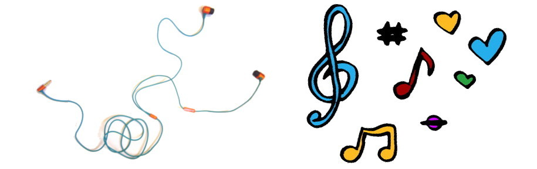

Слушането на музика докато работим е полезно понякога
Като машина за търсене на закономерности, човешкият мозък може да се претовари, ако е зает с повече неща едновременно. А когато слушаме музика, несъзнателно се опитваме да отгатнем какво следва, така че дори слушането на музика да ни се струва безобидно занимание, съзнанието ни извършва стотици незабележими изчисления.
Но ако тишината или пък прекаленият шум в офиса ни натоварва, ето как да я заменим с музика.
Все същото
Слушането на музика е препоръчано, когато извършваме повтаряща се работа, която не изисква мисъл. Тъй като мозъкът ни постоянно се опитва да предрича, трябва да му преложим нещо без много вариации (такива са мелодийките, които пускат в мола или в асансьора, наричани още мюзак) или нещо познато.
Затова когато се опитваме да се съсредоточим, може да слушаме всеки път една и съща песен. Това има двоен ефект: първо, не се разсейваме и освен това, започваме да я свързваме с продуктивност, което представлява или по- точно се свързва в ума ни със своеобразен ритуал. Добре е парчето да е без текст или на език, който не разбирате.
Направено специално
А има и вид музика, която е направена специално хем да ни държи ангажирани, хем да не се натрапва- това са саундтраците на филми или видео игри. Пробвайте и тази колекция, подбрана специално за програмиране.
Шум от средата
Друг вид звуци, които човешкият организъм игнорира са естествената му обстановка от хиляди години- поточета, птички или вятър. Добре се възприема, когато имаме да свършим някаква задача, шум на кафене или дъжд; може и в комбинация с някоя нежна мелодия.
Друго близо до шума от природата е ambient жанра. Подобен ефект имат инструменталната музика и по мои впечатления chillstep.
Тематично
Може би сте чували, че докато пишат някои автори намират вдъхновение от музиката. Ако пишат драматична сцена, си пускат нещо в стил Хичкок. Ако пишат приключенска сцена- епично произведение. Ако пишат за отминал период избират мадригали, суинг, диско или каквото е звучало през онази ера.
Но може да си направите плейлисти освен според настроението за писане, съобразявайки се с какво би слушал героят, каква атмосфера искаме да създадем, или просто да си пуснем успокояваща музика без връзка със сюжета.
По- важно е да не заспя
Но може би нямаме нужда от помощ за съсредоточаване. Ако сме унили, тогава ни трябва нещо забавно и повдигащо духа. Тук е мястото на любимите ни песни, за предпочитане рок, фънк или dirty pop. Слушайте всичко без ограничения, пък когато се поразбудите може сериозно да се заемете с работата.
Тогава чак идва време да пробвате сайта Get work done, който подбира парчета в две категории- бързо и по- бързо, в случай че ви е хрумнало да завладявате света.
Вижте и тази страхотна инфографика, която ви казва какво точно да слушате, в зависимост от професията ви.
Ако пък сте готови за нещо по- различно, вижте някои от любимите ми подкастове.